PRONTO PARA CONFERIR (27/10/2026). Ramo obra-etapa9d-2026-10-26. Teste de olho (as fotos) e de máquina
(tests/test_decisoes_nucleo2.py: cada conserto tem uma medida que falha no código de antes e passa no de agora).
O critério do Samuel: "Eu quero que o papel saia branco, e o desenho também saia perfeito."
Cada foto diz por onde a página passou e com quais opções. "Antes" = o programa de hoje (ad8df2b); "Agora" = esta
etapa. Só páginas que vão ser impressas.
Palavras do Samuel (01/10/2026, D-304): "o tamanho do arquivo depois não importa". E a ordem de 27/10: "os agentes estão mudando coisas que eu já tinha definido, é só para fazer o que eu já tinha mandado".
O que mudou: a etapa 10b tinha passado a guardar a página de cor/cinza em JPEG (perde um pouco, para o arquivo ficar menor). Isso foi desfeito: a página volta a ir para o PDF sem perda nenhuma, ponto a ponto igual à que aparece na tela. O Preto e branco puro (1 bit) já era sem perda e não mudou. A ideia de guardar com no máximo 2 vezes a resolução do scan (D-531) foi cancelada e não foi feita.
O que olhar: nada muda na imagem (ela fica igual à tela). O arquivo volta a ficar grande nos livros de página grande, como era antes da 10b (ex.: Antiphon 56 no Mágico pro, uma página: 4,0 MB com o JPEG → ~20 MB sem perda, números da etapa 10b).
A decisão D-532 é uma escolha da gerente, não do Samuel. Por isso a conta ficou pronta e desligada de fábrica: hoje nada muda (a coluna da esquerda de cada foto é o que o programa faz agora). A coluna da direita mostra como sairia se o Samuel disser "sim". Caminho: livro novo de fábrica (dividir, endireitar, cortar) + Preto e branco.
Pergunta ao Samuel: quer que a gravura de fundo escuro (o fundo manchado da gravura em madeira) e a foto impressa em pontinhos saiam em tons de cinza no Preto e branco, como as fotos já saem? Ou ficam como hoje, em preto e branco puro (com o chuvisco)?
Palatino 74 e 70 (alfabeto em madeira, fundo escuro): hoje o fundo vira chuvisco; ligada, sai em cinza, igual ao original.
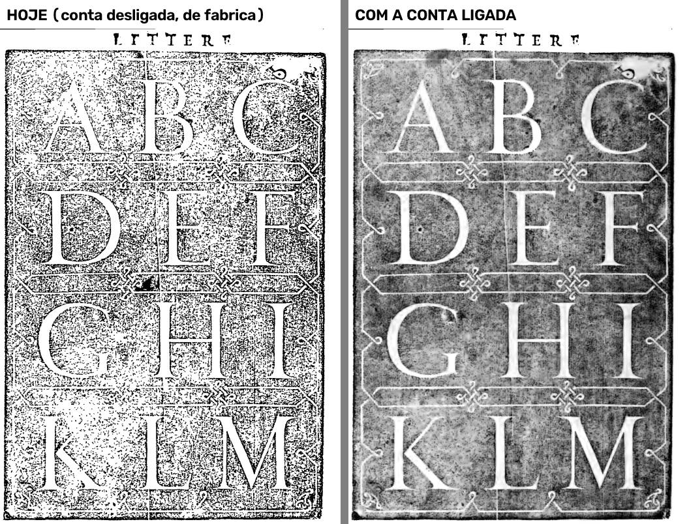
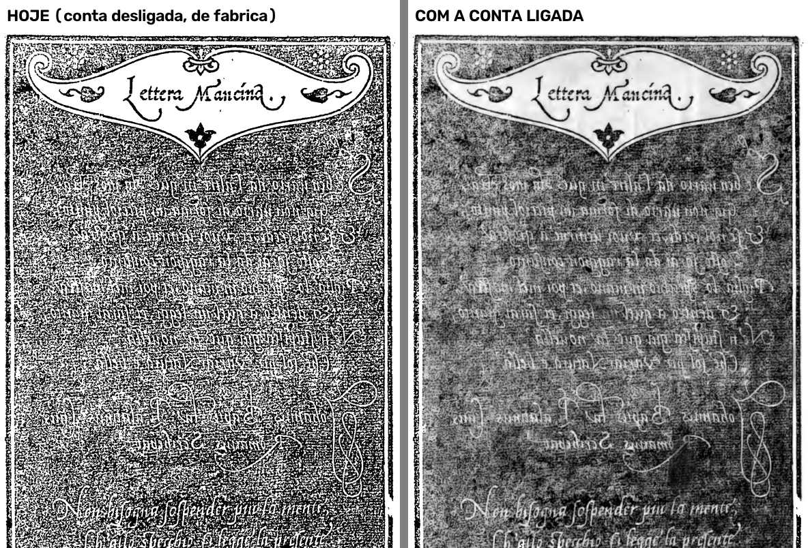
Righetti 62 e 64 (foto impressa em pontinhos no meio do texto): hoje sai chuviscada; ligada, em cinza. O texto em volta continua preto e branco.
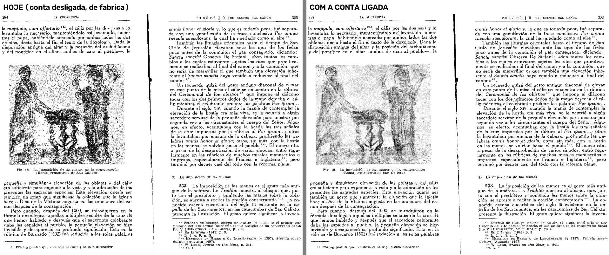
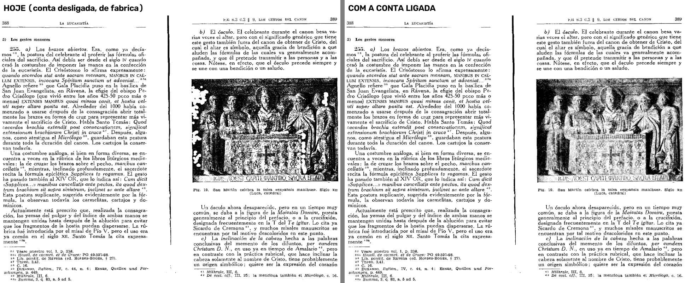
Guardas — tem de continuar em preto e branco puro mesmo ligada (e continua): o retrato do Palatino 5 (gravura de traço, papel dentro dela branco, D-126), a hachura do Valadés 41, a prancha da Pesel 51.
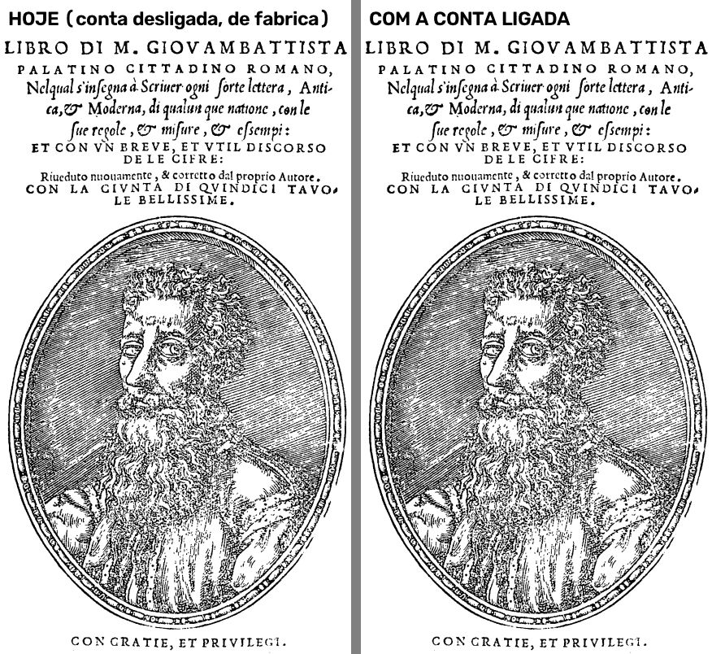
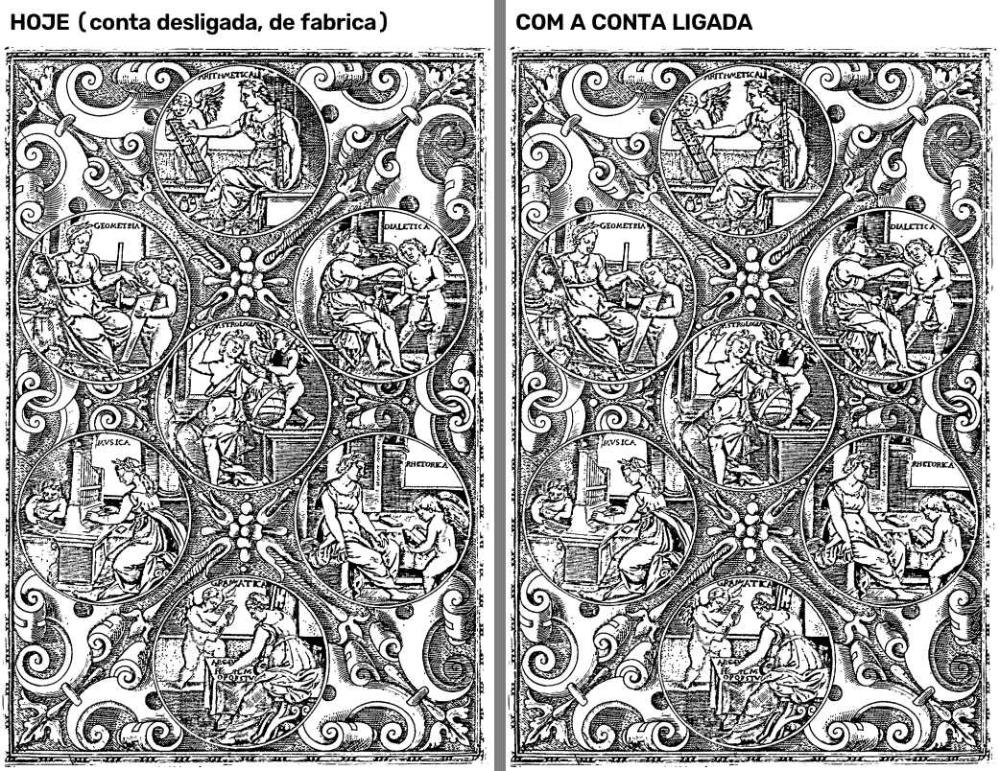
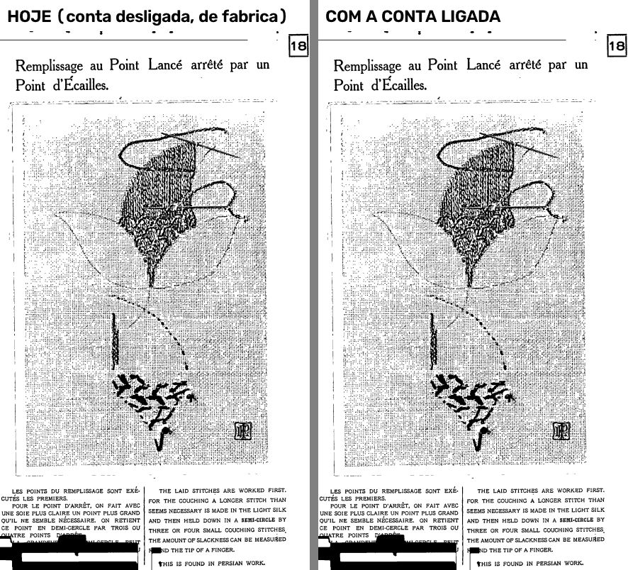
Ressalva: o Palatino 69 (alfabeto gótico em madeira, fundo mais claro e mais pontilhado) não entra na conta e continua chuviscado mesmo ligada; para pegá-lo, a conta pegaria também o retrato do Palatino 5 e a hachura do Valadés.
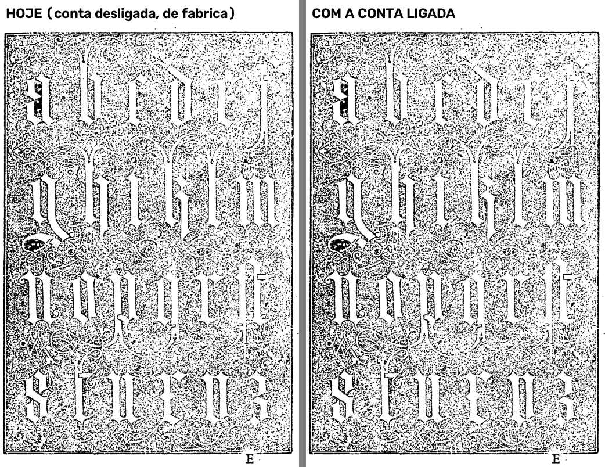
(Na Pesel 51, os blocos pretos embaixo, sobre o texto, já existem hoje — não são desta etapa; ficam na Lista de bugs.)
Decisão D-027 (30/09/2026): "essa é uma página que eu poderia simplesmente escolher a opção para virar uma folha branca, pois não tem nenhum conteúdo." E D-227: "eu poderia ir lá e apagar ou botar branco por cima".
O defeito: na página em "Tirar o fundo" de que o fundo foi tirado (livro do Internet Archive, com camadas), "Deixar a folha em branco" e "pintar de branco" não faziam nada no PDF: as letras continuavam. O que olhar: à direita, a folha sai toda branca no PDF; com "pintar de branco" só na metade de cima, só ela sai branca. Caminho: livro novo de fábrica + "Limpar a folha" + filtro Tirar o fundo, PDF de verdade.
Opus Majus 11 — "Deixar a folha em branco" e "pintar de branco" na metade de cima:
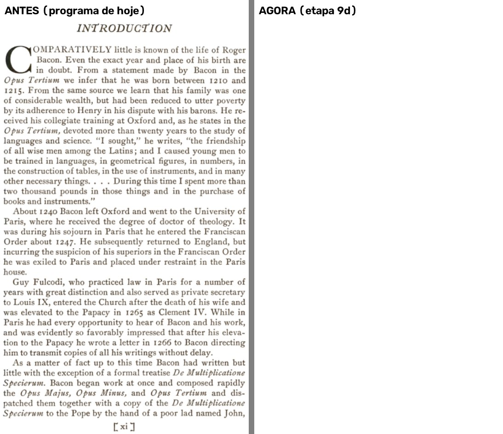
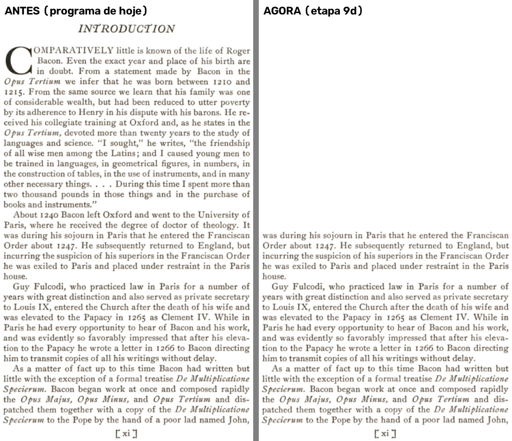
Opus Majus 3 (folha de rosto):
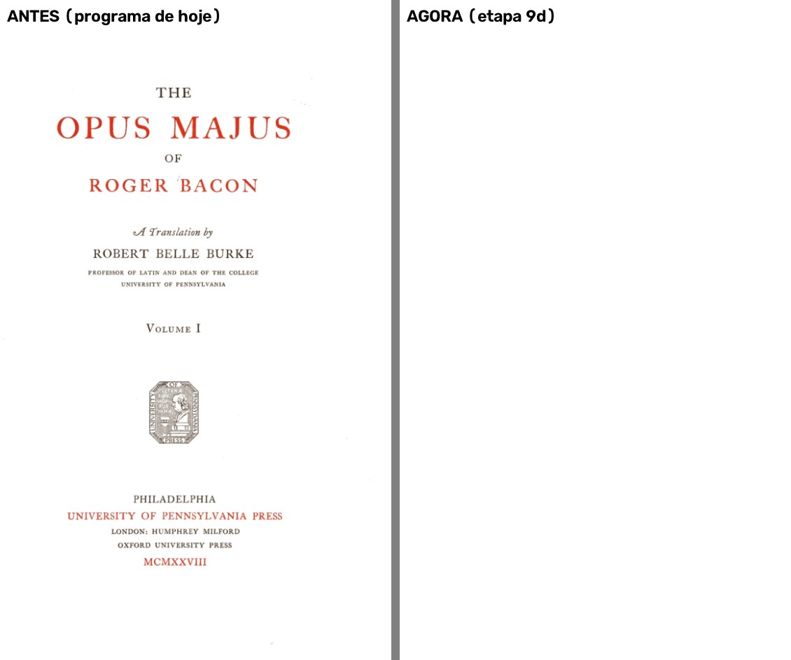
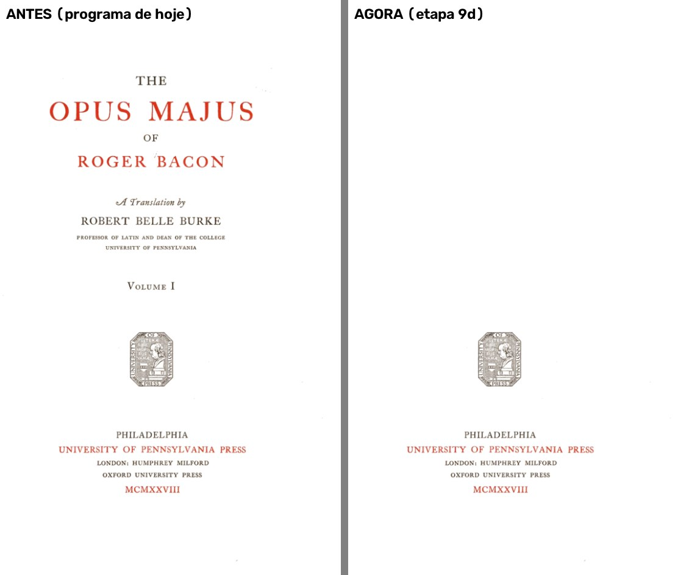
Palatino 5:
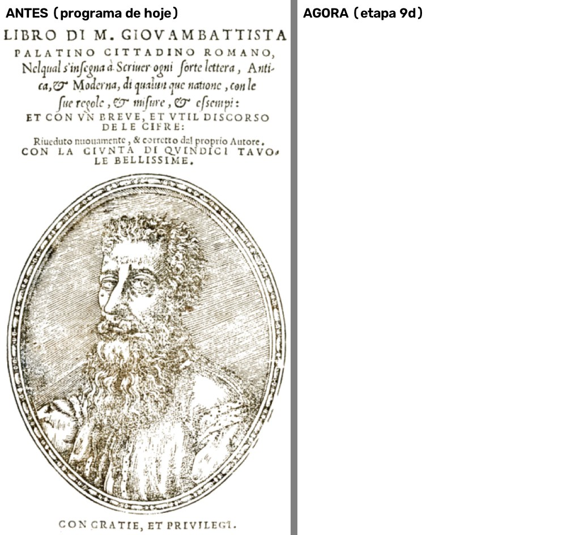
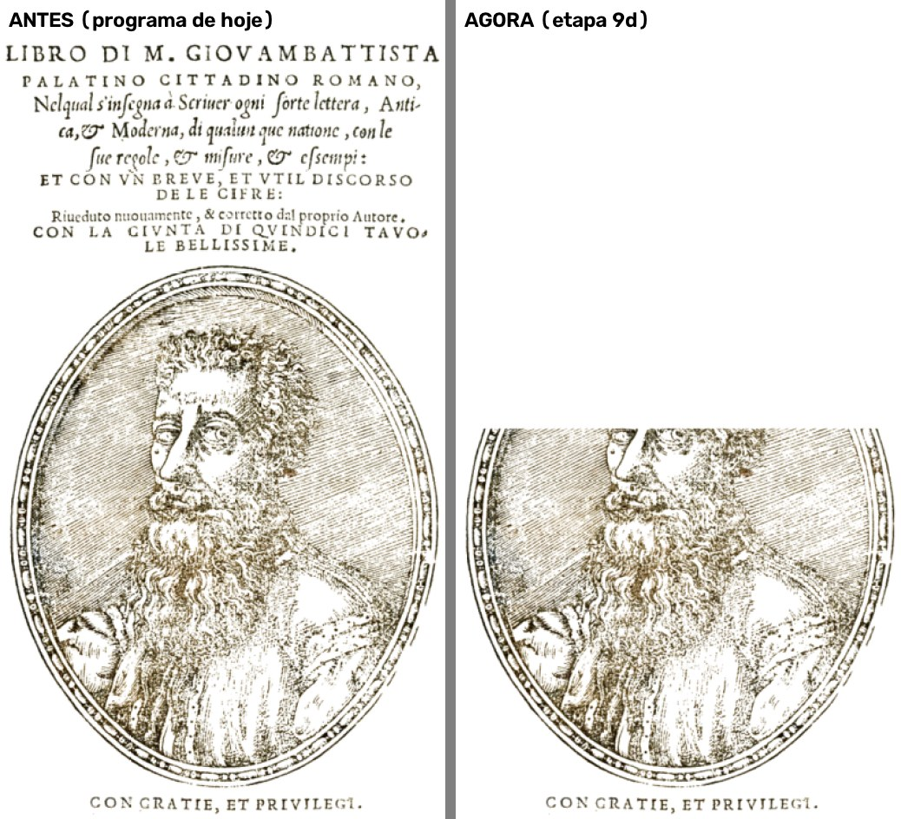
Medida (o ponto mais escuro da página no PDF, de 0 = preto a 255 = branco): com "Deixar a folha em branco", antes 4 a 9 (com tinta), agora 255 (branca) nas três páginas.
Editor de Impressão · gerado em 27/10/2026 às 17:55